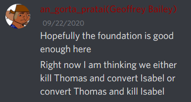

Continuing
4. Interactions with noot: Arete > Appel
If light did indeed reveal that they didnt check, they would’ve checked roght after light died; only person to not act 2 nights ago was appel
/vo-
I have been on Arete’s rear end since d2 and Arete can account for this
If Appel is the wolf then Eli was holding out on me in SFoL 64
I will be on in the evening tomorrow. I have a job interview thing to attend
Alright so.
I think it’s either Gorta or Arete, so I’ll ISO both of them from scum!G/A and town!G/A perspective. I think that’d be the best way to go about this.
Quick NKA
The nightkill would make the most sense from Gorta because I townleaned him in my ISO, Arete townreads him and scumreads me, and Cloned scumreads Arete. Having Lemon die doesn’t reveal any info, so it would be a very safe choice for him, as we’re busy reading each other.
The nightkill from scum!Arete’s perspective would make sense if they didn’t want to straight up kill Cloned, either in order to keep others not suspicious or make Cloned suspicious about his own read.
(And theoretically, it’d also make some sense from W!Cloned perspective but that is very meh and I will be madly impressed if Cloned is scum here)
Right now Arete has had some wolf-equity the whole game, but ALSO a lot of town-equity, even if I don’t like the way they immediately jumped to almost locking me as scum even before they analysed the nightkill.
Whereas Gorta has had a lot of wolf-equity during the early game, and the only saving point is them pushing Light during EoD4 or so – and it’s actually bigger than it sounds like. That’s as far as I read. Their behavior towards their read on me/Arete during yesterday’s EoD, and their sudden flip is definitely something to be considered, ans I’ll take a look at it today.
…I ended up procrastinating. Agh.
@clonedcheese @Arete @an_gorta_pratai can we talk about something?
sure
here
Good morning ^^
What are your reads on Gorta and Cloned, as of now? You did talk about the nightkill, but for example, can I have your reasoning as to why the kill is more likely to come from me than Cloned or Gorta?
Hi hi
In my defense, the shop system hasn’t really been on my mind when I’ve played
1 Like
Can you elaborate on these, by the way?
that was more confbias stuff
we kinda have evidence that light probably actually didn’t check
so if scum checked on the night Light died they could’ve killed them tonight
noot interaction is the nootcheck thing just described - you didn’t act the night where you could’ve done the check
scum interaction mostly with light but also with wazza - one of ya supported the scum while the other fought against them
Also it’s only 9PM but clearly I’m tired
Don’t expect me to English
English hard. Bleh
1 Like
Aaaa. You know it better than me since you’ve read it, so could you quote those posts for me?
…not really?
i mean
you yourself said Light was town
while Arete was like
“eh”
…I meant in Wazza’s case? Confused noises
my read on cloned is ‘literally never a wolf even before the nightkill’
if I’m wrong then dead chat is probably flaming me right now for not reevaluating when I’m still alive but like … all the reasons I’ve had for village reading him still apply, Light’s treatment of him and Wazza makes no sense if he’s a wolf, he’s also the only person really continuing to solve today despite the fact that if he’s scum he’s effectively already won
I think the nightkill (and more broadly, the nightkills this game in general) are more likely to come from you than from Gorta because for lack of a better way to phrase it Gorta makes very boring nightkills and the nightkills have not been boring
like, to explain what I mean, when Gorta was deciding non-PR-related nightkills in SFoL 64 he basically just suggested or ‘kill the town leaders/consensus townies/SPKs’ (or made PR-related kills
(n.b. these aren’t the kills that ended up happening but this is to give an idea of his thought process)

the nightkills this game have been solidly weird, like, Leafia was not consensus V, Lemon was literally a neut claim, and while I can speculate as to how those kills might have benefitted scum I don’t think Gorta really considers making those nightkills in the first place as scum – the Lemon kill in particular was, like, objectively the best kill for scum since it keeps cloned + me alive so he can tunnel me while also leaving {whichever one of you two is town} alive so that even if cloned reevaluates I still have a good chance of “picking wrong”, but I don’t think the possibility of killing the neut would even occur to Gorta. Maybe I’m not giving him enough credit, but.
whereas I know this is within your wolfrange, like, I can look at how you chose kills in Watch Your Mouth to see that you didn’t always just kill off the town leaders/consensus villagers but instead were much more creative with your nightkills
the obvious thing that’s making me slightly hesitant is that I’m still alive even though I’ve been tunnelling you, but I think that makes sense when considering the fact that cloned is tunnelled on me and Gorta has been Strongly Considering me, so leaving me alive in the hopes that I get miscuddled makes sense even if I’m right